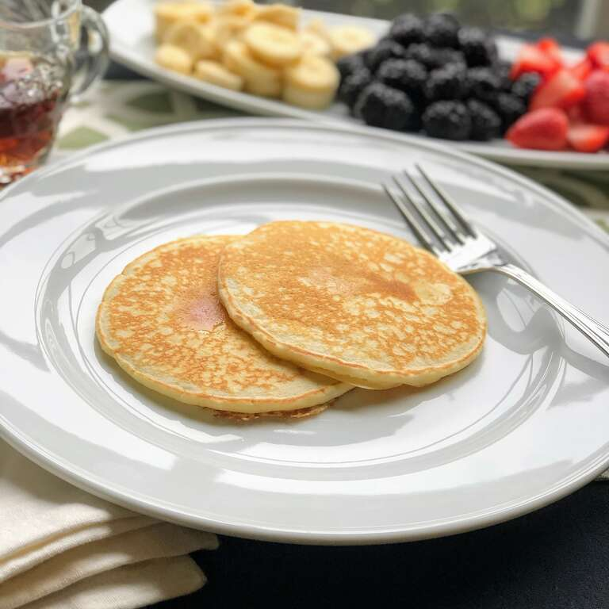

Pancakes

Homemade Pancakes
This recipe will walk you through the steps to create the best homemade
pancakes possible. By the end of the steps followed you will have 10
pancakes to serve to your guest or enjoy with your loved ones.
Ingredients
- 1 1/2 cups all-purpose flour
- 1 1/4 cups milk
- 1 egg
- 3 tablespoons butter, melted
- 2 teaspoons baking powder
- 1 teaspoon salt
Steps
- Mix flour, egg, milk, butter, baking power, and salt together.
- Heat a lightly oiled griddle on low heat. Scoop 1/4 cup batter onto
the griddle and cook until top and edges are dry, 2 to 4 minutes.
Flip and cook until lightly browned. Repeat with remaining batter.